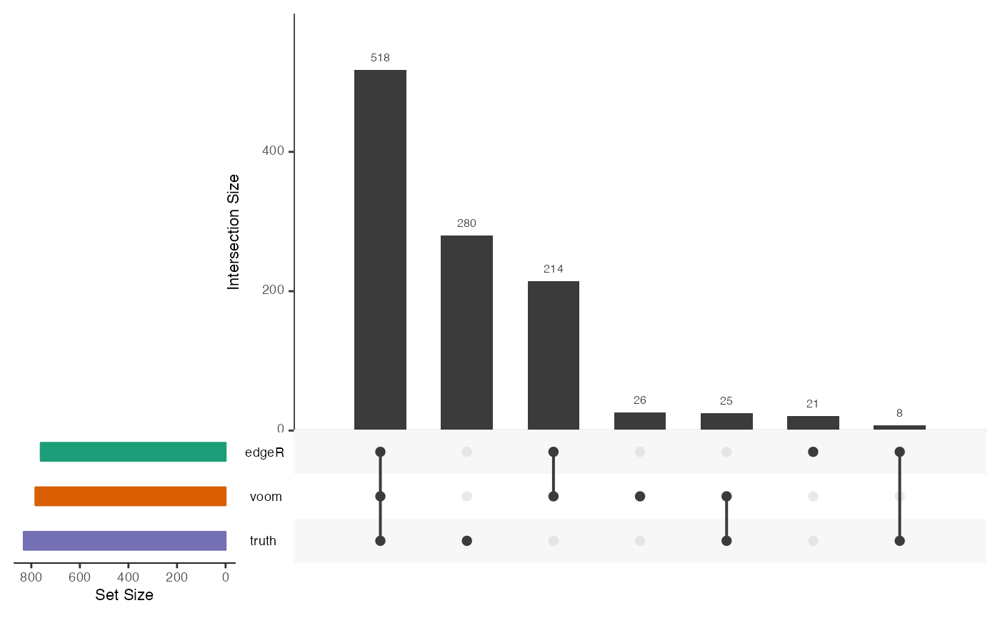

Generate UpSet plots showing the overlaps among sets of significant feature for a given adjusted p-value threshold. Optionally, the truth can be included as a "perfect" method. Note that if the results are stratified, only one category at a time can be displayed.
plot_upset( cobraplot, stratum = NULL, nsets = NULL, nintersects = NULL, sets.bar.color = NULL, ... )
Arguments
| cobraplot | A |
|---|---|
| stratum | If results are stratified, the category to plot results for. Can be numeric or categorical (the name of the category). |
| nsets | The number of methods to include. By default, it is determined
automatically from the |
| nintersects | The number of set intersections to display. By default, it
is determined automatically from the |
| sets.bar.color | The colors to use for the bars in the UpSet plot. By
default, they are extracted from the |
| ... | Additional arguments to |
Value
Nothing, displays a graph
References
Lex and Gehlenborg (2014): Points of view: Sets and intersections. Nature Methods 11, 779.
Lex et al (2014): UpSet: Visualization of intersecting sets. IEEE Transactions on Visualization and Computer Graphics 20(12), 1983-1992.
Author
Charlotte Soneson
Examples
data(cobradata_example) cobraperf <- calculate_performance(cobradata_example, binary_truth = "status", aspects = "overlap")#> Warning: Object doesn't have a slot sval. Please run update_cobradata(). For consistency, I will return an empty data.framecobraplot <- prepare_data_for_plot(cobraperf, colorscheme = "Dark2", incltruth = TRUE) plot_upset(cobraplot)plot_upset(cobraplot, order.by = "freq", decreasing = TRUE)cobraperf <- calculate_performance(cobradata_example, binary_truth = "status", aspects = "overlap", splv = "expr_cat")#> Warning: Object doesn't have a slot sval. Please run update_cobradata(). For consistency, I will return an empty data.framecobraplot <- prepare_data_for_plot(cobraperf, colorscheme = "Dark2", incltruth = TRUE) plot_upset(cobraplot, stratum = "[2.85e+00,1.45e+01)")